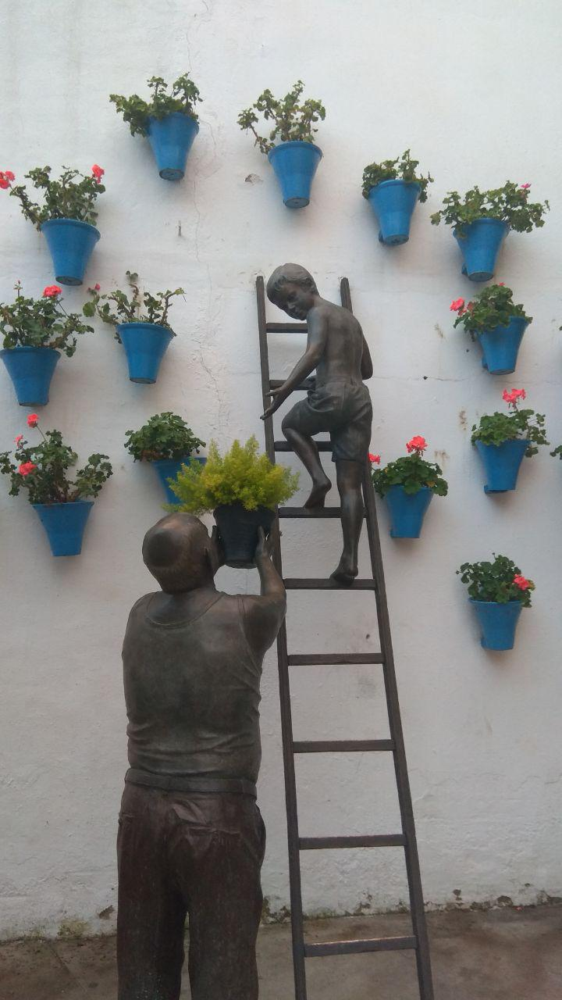

Los patios
El Festival de los Patios Cordobeses es un concurso de patios de Córdoba (España) celebrado, generalmente, durante la segunda y tercera semana del mes de mayo. Los participantes abren, de modo gratuito, decorativo sus patios para que puedan ser visitados dentro del horario establecido para tal fin. En los últimos años, los patios en concursos se señalan con macetas de setos que se colocan flanqueando las puertas, de modo que puedan ser identificados de manera clara.
A fin de incentivar el festival y conservar la arquitectura típica de la ciudad, se admiten a concurso patios de reciente construcción, estableciéndose dos categoría: arquitectura antigua y arquitectura moderna. En los últimos años, hasta 50 patios han participado en el certamen. Además, el festival se completa con un programa educativo organizado por el Ayuntamiento de Córdoba cuyo objetivo es dar a conocer a los estudiantes la arquitectura y el patrimonio, así como promover el respecto por el mismo.

Además, la fiesta se completa con una verbena en el barrio de San Basilio: la asociación de vecinos del barrio pone una barra en un espacio junto a la torre de Belén, y los bares de la calle San Basilio contribuyen con música y venta de bebidas a los grupos de cordobeses y turistas que se reúnen allí.
En 1980 fueron declarados como Fiesta de Interés Turístico Nacional, y tras un larga tramitación, consiguieron inscribirse comoPatrimonio Cultural Inmaterial de la Humanidad por la Unesco el 6 de diciembre de 2012